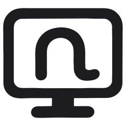
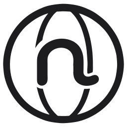
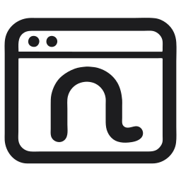
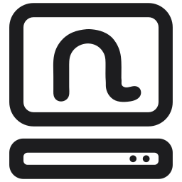
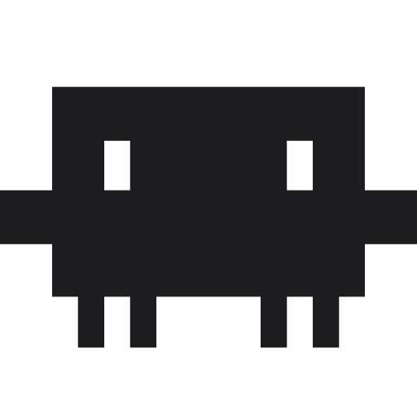
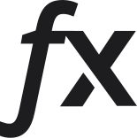
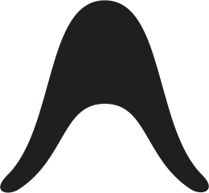
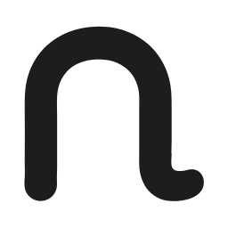

Noodle is a Mac app for working with AI agents. Give each one a name and a job, chat one to one or in groups, and let them use their own computers, browsers and apps.
Free and open source.

Agents with a job
Each agent has a name, a backstory that sets its role, and its own workspace. It remembers the work you've done together.
Teams, not just chatbots
Put several agents in a group with a shared goal. They read each other's messages and split the work between them.
On your Mac
A native app that runs on the AI accounts you already have. Your conversations and files are stored on your computer.
One conversation. A whole team.
Start a group, add the agents you need and give them a goal. A planner, a writer and a researcher work in the same thread, and you step in whenever you like.

Noodle Computer
A computer for every agent.
Give an agent its own desktop that runs privately on your Mac. It can open documents, work with files and install what it needs, and everything is still there tomorrow. You can open the same desktop at any time.

Noodle Browser
Signed in, so they don't have to ask.
Create a browser, sign in to the sites you use and hand it to an agent. It works in those pages in the background and sends what it finds back to your chat. Pause it whenever you want to take over.

Noodle Applet
Ask for a tool. Get a tool.
When you need a tracker, a calculator or a small website, your agents build it. Applet opens it in its own window straight from the conversation, and it remembers its data between uses.

Noodle Hub
Share your AI with the people you choose.
Run the Hub on an always-on Mac and invite family or friends. Their bots use the subscriptions you lend them without ever holding your sign-ins.
Bring the AI you already use.
Noodle doesn't sell you a model. Connect the accounts you already pay for, or run a free model on your Mac, and mix them in the same team.
- OpenAI Codex

Claude Code- Grok Build
- Muse Code

FX OpenCode
OpenCode
Antigravity- Apple Intelligence
- Local models
Private by default.
Every agent starts restricted. You decide which folders each one can see. Your conversations and files are stored on your Mac, and your voice is transcribed on it.
Your files, your call
Each agent works in its own folder until you share more.
On-device voice
Dictation and transcription happen entirely on your Mac.
Open source
Every line of code is public under the Apache 2.0 licence.
No new account
Noodle uses the AI accounts you already have. No sign-up.
Download Noodle.
Start with Noodle, or get all five apps at once with the Suite. Everything is free.

NoodleWork with AI agents on your own or as a team.Download Noodle ComputerPrivate computers for you and your agents.Download Noodle BrowserSigned-in browsers you hand to your agents.Download Noodle AppletRuns the tools and apps your agents build.Download Noodle HubShare your AI accounts with people you invite.DownloadAll five apps in one installer.